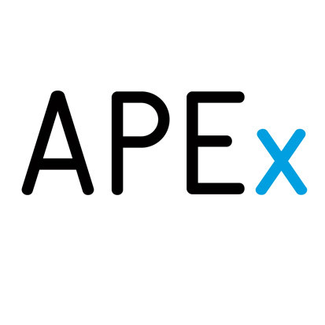
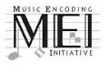

|
Welcome
The mission of DARIAH is to enhance and support digitally-enabled research across the humanities and arts. DARIAH aims to develop and maintain an infrastructure in support of ICT-based research practices.
DARIAH is working with communities of practice to:
- Explore and apply ICT-based methods and tools to enable new research questions to be asked and old questions to be posed in new ways
- Improve research opportunities and outcomes through linking distributed digital source materials of many kinds
- Exchange knowledge, expertise, methodologies and practices across domains and disciplines
|
|
Latest News
 The Department of Digital Humanities at King's College London is looking for a highly motivated and technically sophisticated individual to join the research and development team. The position will involve data modelling and analysis, plus the design and development of both editorial and administrative tools and public facing web applications, for the second phase of the Gascon Rolls (1317-1468) project, currently being carried out in collaboration with the University of Bordeaux in France. The focus of the work will be on the exploration of historical/technical issues in adapting historical data to wider digital frameworks, the application of geospatial and data mining approaches, new modes of visualisation and multi-device publishing, and the development of a French interface for the project. Closing date for applications is 12 February 2013. For vacancy details please visit http://www.kcl.ac.uk/depsta/pertra/vacancy/external/pers_detail.php?jobindex=12763
|
We are very pleased to announce that France, as host country of the future European organisation, has received the formal evaluation from the European Commission on the first stage of our application to become a European Research Infrastructure Consortium, the DARIAH ERIC.
The evaluation is positive, requiring some amendments to the application documents. The DARIAH-EU Board of Directors, together with the DARIAH-EU Coordination Office (DCO), are already reviewing the recommendations to assess the modifications required. They are confident that the required changes are relatively minor.
Following the successful revision of the documents, DARIAH will be invited to submit a formal request, the 'Step 2 application', to establish the European organisation.
This is a first great achievement for 2013!
The John K. Fairbank Center for Chinese Studies and the Edwin O. Reischauer Institute of Japanese Studies at Harvard University invite applications for a special post-doctoral fellowship for a recent Ph.D. in any field of East Asian studies. This will be a 24-month fellowship (2013-2015), commencing on July 1, 2013, and the annual fellowship stipend will be $60,000. Application deadline: February 15th, 2013.
The John K. Fairbank Center for Chinese Studies and the Edwin O. Reischauer Institute of Japanese Studies at Harvard University announces a special post-doctoral fellowship for the 2013-2015 academic years, for a recent Ph.D. in any field of East Asian studies, with extensive expertise in the digital humanities or qualitative digital data management in the social sciences. The fellow will be expected to assist faculty, students, and research affiliates, as described below, and assist specific digital projects, including the Digital Archive of Japan's 2011 disasters http://www.jdarchive.org/ja/home. For further information please visit http://blog.lib.umn.edu/amstdy/main/2013/01/2013-15-harvard-postdoctoral-f.html
The consortium of the EU-funded project APEx – Archives Portal Europe Network of Excellence – consisting of 28 national archives and ICARUS, is organising a conference to discuss the major challenges archives face on their path into the digital world. It aims at debating the major questions in respective professional fields by evaluating the broad scope of methods and approaches and by gathering experiences and perspectives from related projects conducive to obtaining new insights and visions regarding the further development of the Archives Portal Europe. Additionally, a series of workshops will provide practical knowledge in order to fulfill the preconditions of becoming participants of online platforms and portals. Potential speakers are invited to present a paper (15 min.) within one of the following panels and are asked to send a proposal of their presentation (about 1000 characters) by completing this online form.
The deadline for submitting proposals is 17 February 2013
The submission of a proposal does not imply a guarantee of acceptance. We will inform you about our decision by 15 March 2013 at the latest.
The consent of the speakers/authors provided, papers might be published on the Archives Portal Europe or within an anthology accompanying the conference.
Conference language: English For further information, please visit the conferece website http://www.apex-project.eu/index.php/dublin-conference
Tuesday, 18 December 2012
You are cordially invited to participate in the Music Encoding Conference 2013 – Concepts, Methods, Editions, to be held 22-24 May, 2013, at the Mainz Academy for Literature and Sciences in Mainz, Germany.
Music encoding is now a prominent feature of various areas in musicology and music librarianship. The encoding of symbolic music data provides a foundation for a wide range of scholarship, and over the last several years, has garnered a great deal of attention in the digital humanities. This conference intends to provide an overview of the current state of data modeling, generation, and use, and aims to introduce new perspectives on topics in the fields of traditional and computational musicology, music librarianship, and scholarly editing, as well as in the broader area of digital humanities. Topics
Proposals for papers, posters, panel discussions, and pre-conference workshops are encouraged. Prospective topics for submissions include: - theoretical and practical aspects of music, music notation models, and scholarly editing
- rendering of symbolic music data in audio and graphical forms
- relationships between symbolic music data, encoded text, and facsimile images
- capture, interchange, and re-purposing of music data and metadata
- ontologies, authority files, and linked data in music encoding
- additional topics relevant to music encoding and music editing
|
|
|
|
|
|
Page 4 of 30 |
|
Information brochure

Download PDF 
|